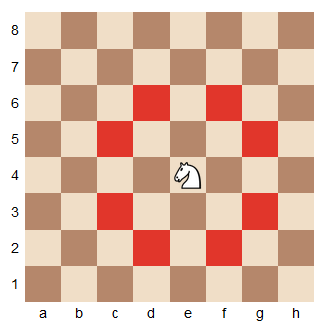

Les Échecs
Histoire : Jeu d'origine incertaine, les échecs dans la forme moderne est répandu dans le monde entier et pratiquer par de nombreux joueurs.
L'obectif : Mettre le Roi adverse en position d'échec et mat.
Les règles:
L’échiquier
Les cases d’un échiquier sont numérotées, comme à la bataille navale.
Sur un échiquier, il y a 8 colonnes (de a à h) et 8 rangées (de 1 à 8).
Les pièces
Au début de la partie, chaque joueur dispose de 16 pièces: un Roi, une Dame, deux Tours, deux Fous, deux Cavaliers et huit pions.
Placer les pièces sur l’échiquier
Les déplacements :
Généralités :
Les deux joueurs jouent à tour de rôle en déplaçant une seule de leurs pièces (le roque est la seul exception).
Si une pièce se déplace sur une case occupée par une pièce adverse, celle-ci est prise et enlevée de l’échiquier.
Une pièce ne peut pas se placer sur une case occupée par une pièce de son propre camp.
Seul le Cavalier peut sauter au-dessus des autres pièces.
Le Pion :
Le pion est la seule pièce qui ne peut pas reculer. C’est aussi la seule pièce qui ne prend pas comme elle avance. Les pions avancent en effet d’une case sur la même colonne, si la case située devant eux est libre. Ils prennent sur l’une ou l’autre des deux cases situées devant eux en diagonale. Un pion situé sur sa rangée de départ peut avancer de deux cases (mais il n’est pas obligé).
La Tour :
La Tour se déplace horizontalement ou verticalement, d’autant de cases qu’elle veut. Dans le diagramme ci-dessous, on a indiqué en couleur toutes les cases où la Tour e4 peut aller. La Tour ne peut pas aller sur une case occupée par une pièce de son camp, ni sauter au-dessus d’une autre pièce.
Le Fou :
Le Fou se déplace en diagonale, d’autant de cases qu’il veut. Dans le diagramme ci-dessus, on a indiqué en couleur toutes les cases où le Fou e4 peut aller. Chaque joueur dispose au départ d’un Fou sur une case noire et d’un Fou sur une case blanche. Ces Fous ne pourront jamais changer de couleur durant toute la partie.
Le Cavalier :
Le déplacement du Cavalier est un peu plus compliqué, et il y a plusieurs façons de l’expliquer. J’aime bien dire que le Cavalier se déplace de deux cases horizontalement ou verticalement, puis fait un pas sur le côté. Il effectue donc une sorte de « L » majuscule, tourné dans n’importe quel sens. On peut remarquer qu’un Cavalier qui se trouve sur une case blanche ne peut, au coup suivant, aller que sur des cases noires (et inversement). Le Cavalier est la seule pièce qui peut sauter au-dessus des autres pièces (les siennes et celles de l’adversaire).
Le Roi :
Le Roi se déplace d’une seule case, dans toutes les directions. Lorsqu’un Roi est attaqué par une pièce adverse, on dit qu’il est en échec. Un joueur n’a pas le droit de laisser son Roi en échec. Il n’a pas non plus le droit de déplacer son Roi sur une case où celui-ci sera attaqué (donc en échec).
La Reine :
La Dame se déplace comme la Tour et le Fou: elle peut donc se déplacer verticalement, horizontalement et en diagonale, d’autant de cases qu’elle veut (sans bien sûr pouvoir passer au-dessus d’une autre pièce ou pouvoir prendre une pièce de son propre camp). Comme c’est la pièce la plus mobile, c’est aussi la pièce qui a la plus grande valeur.
PROMOTION :
Lorsqu’un joueur avance un pion sur la dernière rangée, ou s’il prend avec un pion une pièce qui se trouve sur la dernière rangée, il doit le remplacer par une pièce de son choix (Dame, Tour, Fou ou Cavalier), de la même couleur (il est interdit de promouvoir un pion dans une pièce adverse !) quelles que soient les pièces restantes sur l’échiquier. Il peut ainsi se retrouver avec deux Dames, ou 3 Fous, etc.
Le Roque :
Le roque est un coup spécial qui concerne le Roi et l’une des deux Tours. Lorsque le Roi et cette Tour sont encore sur leurs cases initiales et qu’il n’y a plus de pièces entre eux, le joueur peut déplacer de deux cases le Roi vers la Tour, puis placer cette Tour sur la case juste à côté du Roi, de l’autre côté. Le roque peut être effectué sur l’aile roi (on parle alors de petit roque) ou sur l’aile dame (on parle alors de grand roque). La figure ci-dessous représente les deux étapes du petit roque des Blancs et du grand roque des Noirs. Il faut bien faire attention à bouger d’abord le Roi puis la Tour, sinon le coup est considéré comme illégal.
Le déroulement de la partie
Le trait : Le joueur ayant les Blancs commence, puis chaque joueur effectue un coup à tour de rôle. On dit du joueur qui doit jouer qu’il a le trait.
L’échec : Lorsqu’un Roi est attaqué par une pièce adverse, on dit qu’il est en échec. Un joueur n’a pas le droit de laisser son Roi en échec. Il doit parer l’échec en prenant la pièce qui attaque le Roi, en déplaçant son Roi ou en interposant une pièce entre son Roi et l’attaquant.
L’échec et mat : Le but du jeu est de mettre le Roi du joueur adverse en échec de telle façon que l’échec ne puisse pas être paré: on dit que ce joueur est échec et mat.
.jpg)